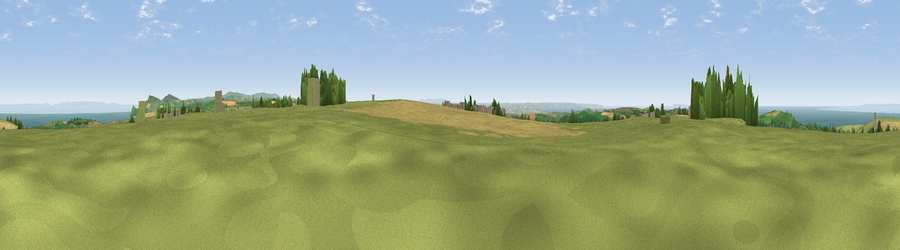

Viewpoint near West Down
#2452 in England · top 11% of its area beats it · near West DownThe view, rendered

A 360° render of this exact spot computed from the terrain model, tree cover and land cover — summer colours, afternoon light, calibrated against photographs of famous viewpoints. Real trees, hedges and buildings will differ in detail.
The panorama
Grey silhouette: terrain skyline in each direction (720 bearings, Earth curvature and refraction included). Dashed green: skyline with trees (+15 m) and buildings (+8 m) as obstacles. Blue strip: how far the ground is visible on each bearing.
Where the view opens
Wedge length = distance to the farthest visible ground on that bearing (vegetation-aware). Rings at 10, 25 and 50 km.
What fills the view
46% grassland · 30% water · 19% cropland · 4% woodland ·
Angular shares of the visible panorama (visual magnitude), not map area. Landscape diversity 0.53 (0–1 Shannon).
Key numbers
More beautiful places nearby
The staircase of upgrades: each row has a higher view potential than everything closer. Driving times are estimates from straight-line distance, calibrated against real road routing — check an actual route before setting out.
| Place | Direction | Drive | Score |
|---|---|---|---|
| Viewpoint near Berrynarbor | ENE · 2 km | ~4 min | 78.3 |
| Viewpoint near Ilfracombe | NW · 3 km | ~8 min | 83.0 |
| Viewpoint near Combe Martin | NE · 7 km | ~14 min | 86.9 |
| Viewpoint near Combe Martin | ENE · 8 km | ~15 min | 88.9 |
| Holdstone Hill | ENE · 10 km | ~19 min | 90.2 |
| The Knoll | ESE · 115 km | ~139 min | 91.0 |
51.17699, -4.10257 · source: screening · position refined by local search. Computed location — check access rights before visiting.